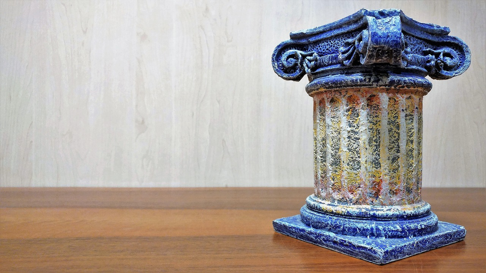
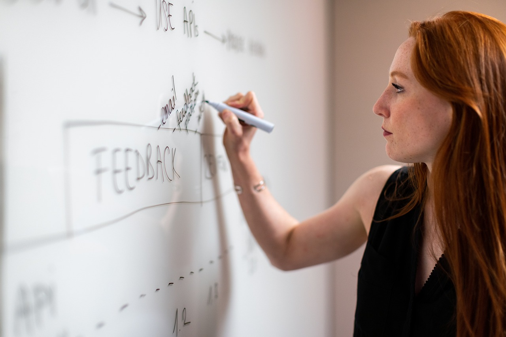
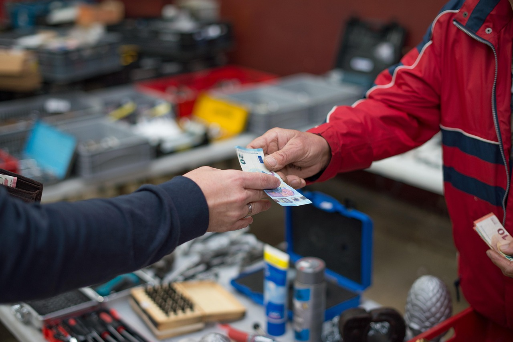
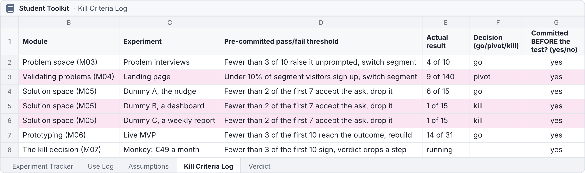
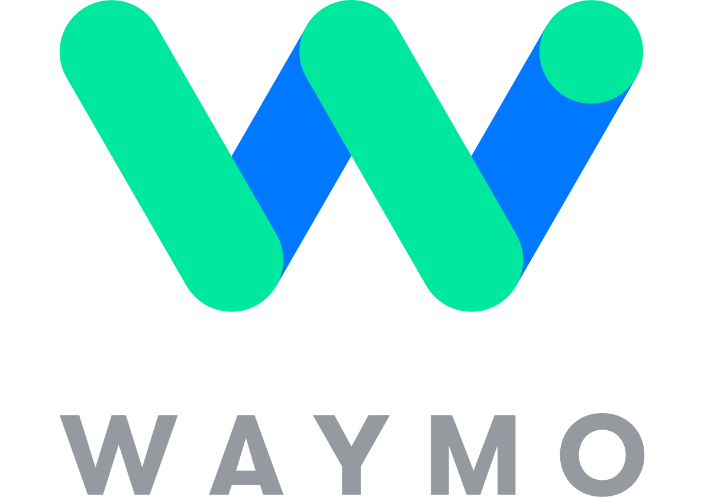
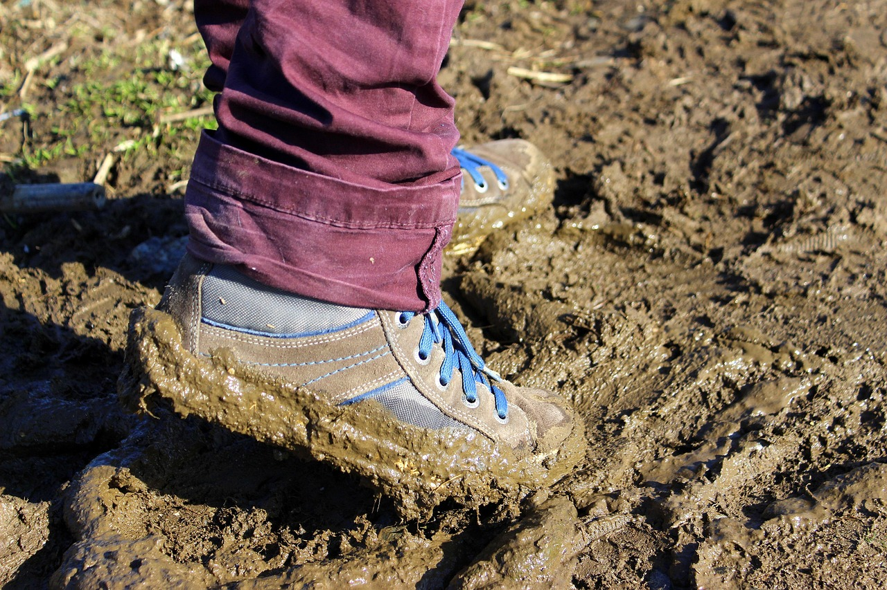
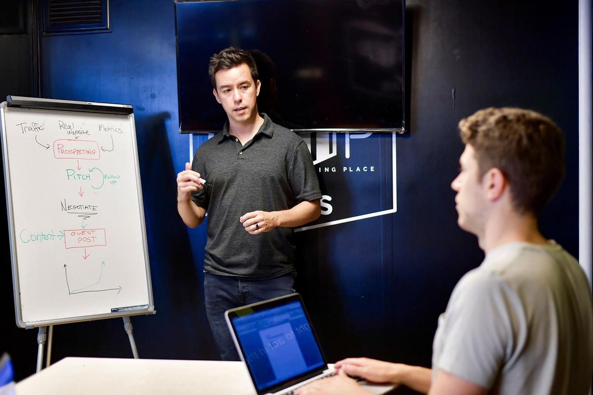

1Open the link github.com/BaNburger/AmbitiousEntrepreneurship
2Go to modules then 07-rapid-validation
3Click the lecture PDF M07_Lecture_Rapid-Validation.pdf, download top right
Where we are · the course
From evidence to a verdict
Thirteen sessions from first idea to first revenue. What teams have by now:
A problem people confirmed Problem space (M03)
A live MVP and fixes shipped Prototyping (M06)
Use records against a line Prototyping (M06)
Check-in · Show of hands
Go, Pivot or Kill? Your gut, right now
Hands up for your band. One click on the band per hand
Gopersevere
Pivotchange one thing
Killstop this venture
Pivot or persevere
Under your line? That is a decision, not a failure
Go means persevere. Pivot has two types. Today adds the third move, kill
Accountability
Report what you did, not what you planned
Chapter 1 of 10
Previously on Ambitious Entrepreneurship
Three pictures from earlier sessions that you need to follow today.
Previously · Kickoff (M00)
Every loop ends in a decision
Build the smallest test, measure what people do, then pivot or persevere
Previously · Prototyping (M06)
You climbed to a slice that works
Previously · your use records · made up
Did they reach the outcome, and come back?
The made-up recruiting venture, counted from its use records
Recruiterswho lose finalists who go quiet
Today's question · hands
Why should this startup die?
Chapter 2 of 10
Your presentations
Your use records next to your line, three minutes per team.
Your presentations · make it credible
Show us where you're at in 3 minutes or less!
Facts
Statistics or research
The outcome you promise, what they used before
12
Numbers
Usage or surveys
Users without help, reached the outcome, came back unprompted
Quotes
Interviews
Two from users, with roles
Images
Screenshots or users
The outcome screen, one fix before and after
Verdict: above or below your line, and what it triggered
What did you do?What did you learn?How can we help?
Input 1 of 4 · Chapter 3 of 10
List it: every way it could die
Imagine your venture dead, and turn every cause into an assumption you can check.
Input 1 of 4 · List it · three questions
Why could your venture die?
1
What turns an assumption into a hypothesis?
2
How do you find the assumptions you rely on?
3
Which of them still matter?
Assumption vs. hypothesis
A hypothesis is an assumption that can fail
AssumptionTaken for granted.
HypothesisFormed so that it can be tested, to see if it might be true.
Until founders test them in the real world, they are not validated.
Worked example · Bastian's course idea
Every idea hides assumptions. Find three
Through our contact with startup founders, we have learnt that many work in a very unstructured way. This led to the idea of an online course that teaches founders to set up internal structures on Notion.
Assumption! Do they struggle?
We have never spoken to founders about this.
Assumption! Why online?
I get paid to teach online courses. That does not mean founders want one.
Assumption! Why Notion?
We like Notion. I think everybody should use it.
The pre-mortem
Imagine your venture is dead, one year from now
Then write down why, before the market does
Klein's exampleA billion-dollar project "failed" because interest waned when the CEO retired
1
Imagine
One year from now. It is dead.
2
Write alone
Every founder lists causes, silently.
3
Translate
Each cause becomes an assumption.
4
Check
Against seven weeks of records.
Kickoff (M00) autopsied an idea · made up
Today you autopsy a venture with evidence
Your Weekly Reflection, "What's our riskiest assumption right now?", and what your records say
Kickoff (M00)
HR loses good finalists
Heard, 4 of 10
Team (M01)
We can sell to HR
Never tested
Finding ideas (M02)
It happens every week
Heard weekly
Problem space (M03)
HR tracks it by hand
€300 a month
Validating problems (M04)
HR signs up for alerts
9 of 140, line crossed
Solution space (M05)
Recruiters want a nudge
6 of 15 accepted
Prototyping (M06)
They use it alone
14 of 31
The kill decision (M07)
?
Your verdict
Why startups die
Startups rarely die of one thing
% of 111 post-mortems since 2018 naming each reason, coloured by area
Translate · made up
Every cause of death is an assumption
About the customer, the solution or the business
CUSTOMER
Cause"Nobody pays"
AssumptionRecruiters pay €49 a month for a nudge
SOLUTION
Cause"They stop using it"
AssumptionA nudge a day keeps finalists from going quiet
BUSINESS
Cause"We can't reach them"
AssumptionRecruiter groups bring us customers
Check · made up
Keep only what your records have not ruled out
Recruiters want to know when a finalist goes quiet
"An hour, not a week", heard in 9 demos
They use the nudge without help
Use Log, 14 of 31 reached the outcome alone
?
Recruiters pay €49 a month, every month
One deposit, Solution space (M05)
?
We reach recruiters through their groups
Traffic Sources, 9 of 140 signed up
?
Finalists answer a WhatsApp nudge
No artifact
Your agentcheck-assumptions
Fill the Use Log from these sessions. Then check our open assumptions against every sheet. session-notes.txt
31 rows filled. 2 assumptions ruled out, each with its row. 3 still stand. No monthly payer, no buyer from the groups, no artifact on the nudge.
Reply…
Now you · alone · 3 minutes
Write your obituary
ImagineOne year from now. Your venture is dead.
WriteThree causes of death, alone
TranslateEach into an assumption you can test
Output
Three assumptions per founder
Input 1 of 4 · List it · the answers
List it: every cause of death is an assumption
1
What turns an assumption into a hypothesis?
It can fail. A hypothesis is an assumption you can prove wrong
2
How do you find the assumptions you rely on?
Imagine your venture dead in a year and write down why
3
Which of them still matter?
Only those your records have not ruled out yet
Input 2 of 4 · Chapter 4 of 10
Rank it: the monkey first
Sort what is left by critical and known, and test the critical unknown first.
Input 2 of 4 · Rank it · three questions
Which assumption do you test first?
1
Which assumption goes first?
2
How do you write it down?
3
How do you test it?
Let's say you're trying to teach a monkey how to recite Shakespeare while on a pedestal.
Astro Teller, head of X, the moonshot factory, 2016
X, formerly Google X
Monkey first
Train the monkey, skip the pedestal
The monkey is the critical unknown. If it is false, nothing else matters

PedestalEasy. Feels like progress.
vs.
MonkeyHard. Decides everything.
Teller's own example · Project Foghorn
The fuel worked. The price was the monkey
Its kill line, set at the start, said $5 per gallon equivalent within 5 years
X, formerly Google X
Sea fuelCarbon-neutral liquid fuel, pulled from seawater
The fuel workedIn the lab, a relatively straightforward task
January 2016, killedAfter two years, half of the work spent on the cost model
Hypothesis mapping
Critical and unknown goes first
Map it · made up
Known means an artifact shows it
Two critical unknowns. The first is the monkey
Formulate · made up
Write it so it can fail
Specific, testable, actionable

WE BELIEVE THATRecruiters who used the nudge pay €49 a month for it, every month
TO VERIFY, WE WILLEach of us asks 10 of them to sign a €49-a-month pre-order
WE'RE RIGHT IFAt least3 of the first 10sign by the First users (M08) check-in
DECISIONIf not, our verdict drops one step
How-to · skills, not prompts · made up
A skill turns feedback into hypotheses
Output wrong? Fix the skill, not the output. Every number stays your bet
skills/feedback-to-hypotheses.md
Steps. List each assumption in the raw notes. Rewrite each with a count and a date.
Rule. Quote who said it. Mark every number as our bet.
Good. At least 3 of the first 10 recruiters sign a €49-a-month pre-order by the next check-in.
Weak. Recruiters like the nudge.
Check. Could it come back with a no?
Your agentfeedback-to-hypotheses
Run it on the demo notes. demo-notes.txt
3 hypotheses, every number is your bet. 3 of the first 10 name a finalist they lost. 3 of the first 10 sign a €49 pre-order. 1 of 20 from a recruiter group books a demo.
We count buyers, not demos. Change the skill.
Skill updated. A channel hypothesis now counts buyers.
Test cheaply
Pick the cheapest test that could prove it wrong
Cheaper is better, as long as it could kill the monkey
Quantitative evidence
Fake doorA button for what doesn't exist yet. Count the clicks.
Functional prototype
Behind the screenThe interface is real. You do the work by hand.
Paid if they pay
ConciergeNo product. You deliver the outcome by hand.

Paid prototype once paid
The askA signed pre-order is signal. A payment validates.
Rung six
Will they pay? Then ask for money
Write the line first · the homework default
Log the line before the first result
If fewer than 3 of the first 10 people from our segment do what our monkey assumes by the Module 08 check-in, it is false. A Go becomes a Pivot, a Pivot a Kill, and a restart picks a new offer.
3 of the first 10
Experiment
Pre-committed threshold
Actual result
Committed before?
Monkey, €49 a month
Fewer than 3 of the first 10 sign, verdict drops a step
running
yes
Now you · team · 3 minutes · don't overdo it
Map your assumptions. Circle the monkey
Critical?If false, does the venture die?
Known?Which artifact shows it?
MonkeyCritical and unknown. Circle one
Output
One monkey per team
Input 2 of 4 · Rank it · the answers
Rank it: train the monkey, skip the pedestal
1
Which assumption goes first?
The monkey, critical and unknown. If it is false, nothing else matters
2
How do you write it down?
So it can fail. Specific, testable, actionable, with its line logged first
3
How do you test it?
With the cheapest test that could prove it wrong. Will they pay? Ask for money
Input 3 of 4 · Chapter 5 of 10
Judge it: your past self decides
Let the lines you wrote decide first, then score the rest on artifacts.
Input 3 of 4 · Judge it · three questions
Who decides your verdict?
1
What decides first?
2
What decides the rest?
3
How final is the verdict?
Accountable decisions · made up
Every decision should be accountable
Tinted rows crossed their line. The team did what it said

Your agentread-the-log
Here are the results of the dummies and the MVP. Fill Actual result, flag every line that was crossed, leave Decision empty. results.csv
Done, 7 rows. Rows 3, 5 and 6 crossed their line, row 8 is still running. The Decision column is yours.
Reply…
Kill signals [are] metrics that a team agrees on when the project starts.
Astro Teller on X, the moonshot factory, 2016
X, formerly Google X
Foghorn's signal read $5 per gallon equivalent within 5 years.
Decide · step 1
Your Kill Criteria Log decides first
The scorecard only scores what the log leaves open
Decide · step 2 · click along
Score nine questions on artifacts
No artifact scores 0. That is a finding, not a missed week
PROBLEM · MAX 6
1Raised unprompted?012
2Workaround spend?012
3At least weekly?012
SOLUTION · MAX 6
4Used without help?012
510 times better?012
6Why now?012
TRACTION · MAX 6
7Anyone paid?012
8Came back alone?012
9Growing weekly?012
Worked example · made up
14 of 18. A Go, at the edge
No open line crossed, so the score decides. One deposit is not yet a business
PROBLEM · MAX 6
1Raised unprompted?1
2Workaround spend?2
3At least weekly?2
SOLUTION · MAX 6
4Used without help?2
510 times better?2
6Why now?1
TRACTION · MAX 6
7Anyone paid?2
8Came back alone?2
9Growing weekly?0
Now you · pairs · 3 minutes
Score two questions on your own artifacts
Question 7Has anyone paid? Which artifact?
Question 8Did users come back alone? Which rows?
Score0, 1 or 2, and why
Output
Two scores, each with its artifact
Pivoting · re-shown from Solution space (M05)
Type 1: another solution to the same problem
Solution or traction weak, problem strong. X's cars, today

Waymo, did this
Pivoting · re-shown from Solution space (M05)
Type 2: back to the problem space
Problem weak
The Go question
Will this be your office in 3 to 5 years?
Build this for years?
Decide · step 3
Today's verdict is provisional
Announce it out loud, then let the monkey test confirm it
TodayProvisional verdict, the line logged
Until thenMonkey test, 10 people each
Next check-inResult next to line. Confirmed or changed
Quick ask · hands
Which line in your log did you cross?
Input 3 of 4 · Judge it · the answers
Judge it: the log first, then the scorecard
1
What decides first?
Your Kill Criteria Log, the lines you wrote before the data
2
What decides the rest?
Nine questions, scored on artifacts. No artifact scores 0
3
How final is the verdict?
Provisional. Say it out loud, then let the monkey test confirm it
Input 4 of 4 · Chapter 6 of 10
Close it: kill well, then restart
Write down what the evidence said, then restart from your own records.
Input 4 of 4 · Close it · three questions
How do you kill well?
1
Why is a kill so hard?
2
How do you kill well?
3
What comes after a kill?
We have bonused every single person on teams that ended their projects.
Astro Teller, TED2016
X, formerly Google X
Escalation of commitment
The more it is yours, the harder you hold on
Average R&D money put back into a course of action, 240 business students

Knee-deepin the big muddy
Does it pay · four randomised trials
Founders who test stop sooner and earn more
759 early-stage firms in Milan, Turin and London, in randomised trials

Taught like scientistsTheory, hypotheses, tests, a decision
+9.8percentage points more ended their project
2.7weeks earlier, on average
+€7,000revenue on average, by the last interview
The Kill Ritual
One page turns a kill into an asset
A rigorously argued kill can earn an A in this course
Worked example · made up
Kill what fell under its line
Your agentkill-page
Draft the kill page for dummy B from this row and our demo notes. Keep the four lines. Mark what you can't back up. kill-log-row-3demo-notes.txt
Draft ready. Evidence, the crossed line and the next-founder lines are filled, each with its row. Surprise is my guess, recruiters wanted to forward the alert. Is that what surprised you?
Yes, and they forwarded it to hiring managers. Add that.
Reply…
KILLED
Now you · alone · 2 minutes
Write one surprise
PickSomething your team already dropped
WriteWhat surprised you about it
ShareOne per team, out loud
Output
One surprise per founder
Restart
Killed? Restart from your own records
Seven weeks produced problems, segments and channels. Use them
Your recordsInterviews, Pain Map, sign-ups, Use Log, channels
Strongest assetOften a channel or a segment, not the product
Concierge offerThe outcome, delivered by hand, with a price
Named people10 from your records to offer it to
Exemplar · made up
The kill was not the end of the company
KILLED0 of 9asked students paid for AI exam prep, line 3 of 10
STRONGEST ASSET12.9%click rate in the student council channel
CONCIERGE RESTART€29a 4-week exam sprint by hand, 30 seats
BY DEMO DAY23seats sold, €667
First users (M08) is for everyone
Go, Pivot or Kill,
€everyone asks for money
Go and Pivot teams sell what the verdict kept.
Killed teams sell the concierge version.
Input 4 of 4 · Close it · the answers
Close it: a kill is an asset
1
Why is a kill so hard?
The more it is yours, the harder you hold on
2
How do you kill well?
With the Kill Ritual, one page on what the evidence said
3
What comes after a kill?
A restart from your own records, its problems, segments, channels
Chapter 7 of 10
Zoom out: world-size ideas, every quarter
Test the method on a moonshot, then find it again in your product work.
Zoom out · think big
The bigger the idea, the earlier X tries to kill it
Problems of millions or billions, sci-fi technology, 5 to 10 years
X, formerly Google X
Your idea could move the worldDoes your kill line still hold?
"How are we going to kill our project today?"
Hands first
It holds
It needs adapting
Zoom out · Loon
Loon beat physics. The business killed it
Nine years. Each step could have killed it, the last one did
X, formerly Google X
LoonBalloons at the edge of space, internet for the last billion
Wi-Fi from the stratosphere to an antenna
Straight to handsets
Up to 15 megabits per second
Balloons that talk to each other
Over 100 days aloft, under 5% of the old cost
Steered to within 500 m after 20,000 km
A business, "much longer and riskier than hoped"
Zoom out · what changes
At world size, the monkey is rarely a sign-up
Keep the rule. Expect another monkey and a longer clock
Physics, biologyVertical farming. Lettuce grew, grains and rice did not. Killed
The first testCargo airship. $200 million for the first data point. Killed
The regulatorWing. Six years and 70,000 test flights to the first drone air carrier certificate
Stays
The line before the data. The hardest part first. A reward for walking away.
Changes
The first test costs weeks and thousands, never millions. The date moves out by years. Budget unlocks per risk that falls.
Zoom out · product work
In product work, this decision comes back every quarter
Product management (M10) makes each one a bet with its expected effect, read every week
Chapter 8 of 10
Wrap-up and check-out
Two pictures to keep, three questions to reflect on, and your week.
Recap · today
Test the critical unknown first
Recap · rungs five and six
From today you test at the wallet line
Reflection 1 of 3 · the content
What could you apply?
🛠️
What could you apply?
🤕
What gave you a hard time?
Reflection 2 of 3 · the process
Man vs. machine
🤖
Where did AI actually help you?
🧠
Where was your genius needed?
🕴️
What are your best hacks to share?
Reflection 3 of 3 · the results
Rose, thorn, bud
🌹
What was the breakthrough today?
🌵
What was the hardest part today?
🌱
What is an idea/feature you didn't have time to finish, but want to explore later?
Homework until next time
Test your monkey with 10 people per student from your segment against a line logged first, decide Go, Pivot or Kill on your Kill Criteria Log and scorecard, and bring the verdict and your next offer to the Module 08 check-in.
10people each
The learning floor is the scored verdict and the offer per team and 5 such people per student.
Your line. Fewer than 3 of the first 10 do what your monkey assumes, and the verdict drops one step.
Homework · how to do it
Write the obituary, then test the monkey
1
Write the obituary. Beside your Weekly Reflection. Each cause becomes an assumption.
2
Find the monkey. Critical and unknown, never a pedestal.
3
Decide. Crossed lines in your log first, the scorecard the rest.
4
Run the cheapest test that could prove the monkey wrong, people from your records first.
!
Watch out. "Would you pay?" is not a test. A signed pre-order is.
5
Killing? Write the Kill Ritual page. Restart from your records with a concierge offer, the outcome by hand.
6
Ask AI twice, for assumptions from raw notes and a blind read of results. Remove hypothesis and names.
7
Midweek. Behind? Look elsewhere. Crossed? Step down now.
Homework · what you come back with
Good is tested, decided and priced
GOOD
WEAK
Monkey test
22 recruiters asked for a €49-a-month pre-order, 7 signed
3 friends said they'd pay
Verdict
Go, confirmed against its line
"Still deciding"
Offer
€49 a month, 14 named recruiters
"Launch on Product Hunt"
References · 1 of 2
Sources in this deck
Bland, D. J., & Osterwalder, A. (2019). Testing business ideas. Wiley. Test card format.
Find out why this startup should die, from your records and the lines you wrote.
Workshop · the map for step 2
Critical and unknown goes first
Workshop · the scorecard for step 3 · click along
Score nine questions on artifacts
Your Kill Criteria Log decides first. No artifact scores 0
PROBLEM · MAX 6
1Raised unprompted?012
2Workaround spend?012
3At least weekly?012
SOLUTION · MAX 6
4Used without help?012
510 times better?012
6Why now?012
TRACTION · MAX 6
7Anyone paid?012
8Came back alone?012
9Growing weekly?012
Workshop · step 1 of 3
Write the obituary
1STEP 1 · 20 MIN
WRITE THE OBITUARY
Find what can still kill your venture
One year from now, it's dead. Causes, alone
Add the Weekly Reflection's riskiest assumptions since Kickoff (M00)
Turn each cause into a customer, solution or business assumption
Check each against your records. Ruled out or standing?
Output Standing assumptions, each with its evidenceMinutes 20
Workshop · step 2 of 3
Find the monkey
2STEP 2 · 25 MIN
FIND THE MONKEY
The assumption that kills you if false, and a cheap test
Map them on critical and known. Known means an artifact
Pick the monkey, the critical unknown, never a pedestal
Cheapest test that could prove it wrong. Fake door, by hand, a pre-order
Name the people, first buyers and Use Log first
Output The monkey, its test, the peopleMinutes 25
Workshop · step 3 of 3
Decide, then commit
3STEP 3 · 45 MIN
DECIDE, THEN COMMIT
A verdict on criteria set before, and a week that tests it
Read your Kill Criteria Log. A crossed line decides
Score the rest, 0 to 2 per question, each with its artifact
Get challenged by a team, or by a blind AI read
Announce the verdict, provisional. Kill Ritual for what it drops
Log the monkey line, commit, send the first asks
Output A provisional verdict, a kill page, a dated line, first asks sentMinutes 45
Arrived empty-handed?
Score what you have
PROBLEM · MAX 6
1Raised unprompted?012
2Workaround spend?012
3At least weekly?012
SOLUTION · MAX 6
4Used without help?0
510 times better?012
6Why now?012
TRACTION · MAX 6
7Anyone paid?012
8Came back alone?0
9Growing weekly?012
No MVP or Use Log? Score what you have, 4 and 8 score zero. Your monkey is use without help.
Homework until next time
Test your monkey with 10 people per student from your segment against a line logged first, decide Go, Pivot or Kill on your Kill Criteria Log and scorecard, and bring the verdict and your next offer to the Module 08 check-in.
10people each
The learning floor is the scored verdict and the offer per team and 5 such people per student.
Your line. Fewer than 3 of the first 10 do what your monkey assumes, and the verdict drops one step.
See you next time!
Module 07 · The Kill Decision · Case discussion · about 90 minutes
Case discussion: 6Wunderkinder
Stand with Christian Reber in Berlin in summer 2012 and decide on Wunderkit, Wunderlist or keeping both.
Case · 6Wunderkinder GmbH, Berlin, summer 2012 · vote 1 of 2
Focus on Wunderkit, focus on Wunderlist, or keep balancing both?
Hands up for your band. One click on the band per hand
Wunderkitfocus on it
Wunderlistfocus on it
Bothkeep balancing
Case · what happened until August 2012
Two years, two products, one team
6WunderkinderWunderlistWunderkitAtomicoEarlybird
Case · the obituary · 15 minutes
It is summer 2013 and Wunderkit is dead. Why?
Write each cause as an assumption
Case · the monkey · 15 minutes
What was critical and still unknown?
Case · Exhibit 3 · 20 minutes
What line should have been logged on 1 February?
Then score Wunderkit. Mark "not disclosed" apart from "the evidence says no"
Case · options as verdicts · 15 minutes
Which verdict is each option?
Case · vote 2 of 2
Same question. Who moved, and why?
Hands up for your band. One click on the band per hand


 X, formerly Google X
X, formerly Google X


![Two windows side by side. Left, the Kill Criteria Log sheet of the Student Toolkit with the columns experiment, pre-committed pass or fail threshold, actual result, decision and committed before the test. Row 2, click dummy A, the morning alert, fewer than 2 of the first 7 accept the ask, drop it, 3 of the first 7 accepted, go, yes. Row 3, click dummy B, the dashboard, the same line, 0 of the first 7, 1 of 15 in all, kill, yes, tinted and ringed. An arrow leads from it to the right window, a shared document titled Kill page, click dummy B, the dashboard, with four lines: evidence, line crossed, surprise and next founder](media/m07-kill-page.png)